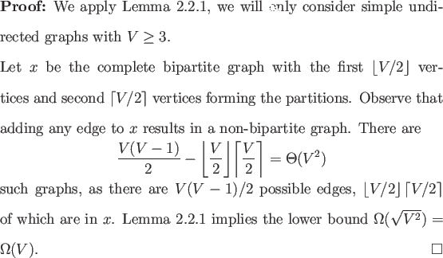

A second fundamental non-trivial monotone graph property is whether a graph is bipartite. This graph property is also evasive.

If this lower bound is known elsewhere the author is unaware of it. It is not known if this lower bound is asymptotically tight.
Having seen two fundamental monotone graph properties with lower bounds potentially quadratically lower than the classical case it is tempting to believe these lower bounds are tight and that there is quadratic speedup in the quantum bounded error model for non-trivial monotone graph properties. To see this is not the case we need only examine the non-trivial monotone graph property analogous to MAJORITY.